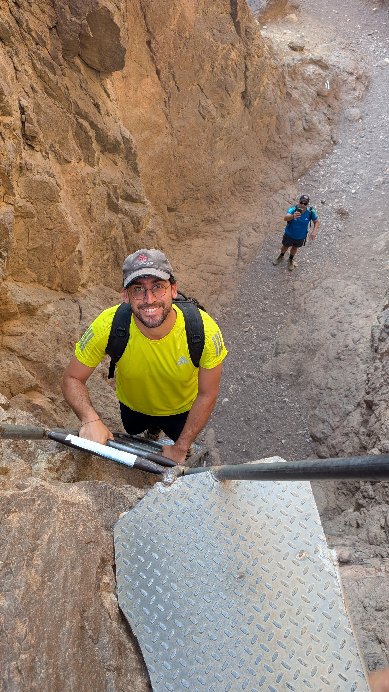
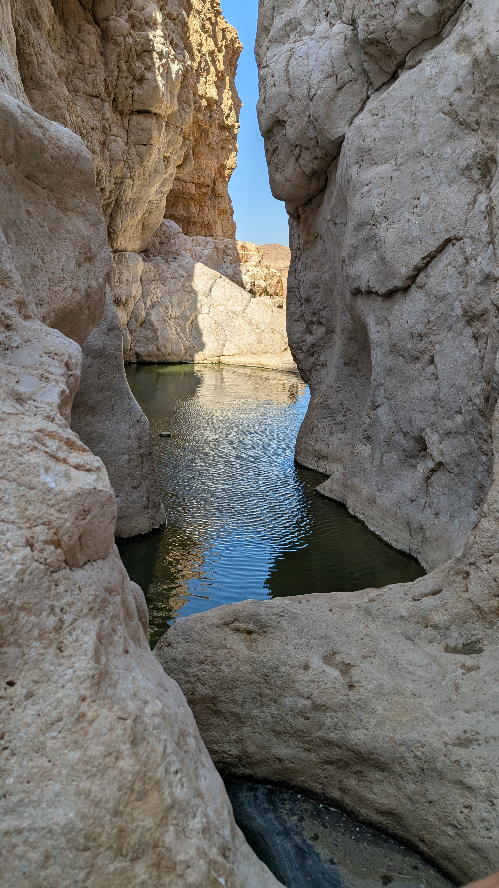
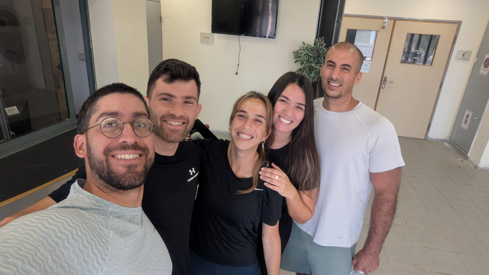
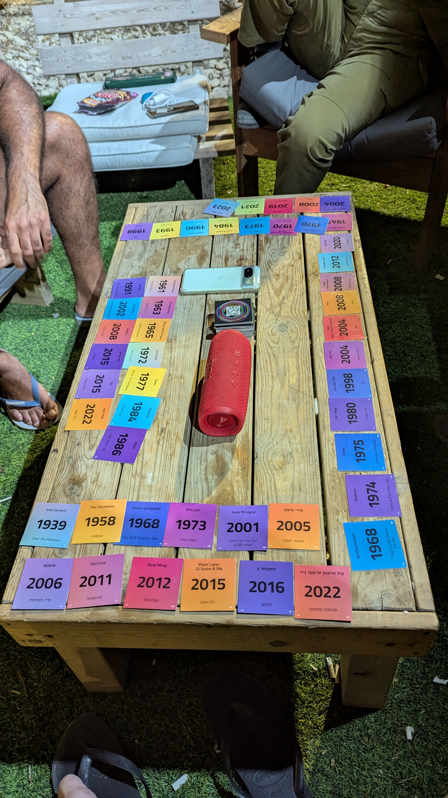

שלום, אני אופיר בן עמי
QA Engineer in the making
לוקח את היסודיות, האחריות, סדר הפעולות והתשוקה לפתרון בעיות מעולם הניהול והמערך המבצעי אל עולם בדיקות התוכנה.
בואו נדבר
קצת עליי והמסע שלי
מי אני?
אני אופיר בן עמי, בן 36, מתגורר בראשון לציון. אני אדם שלומד דברים חדשים ללא הרף, אוהב להיות בתנועה ומאמין שלכל בעיה יש פתרון שמחכה להתגלות.
הדרך שלי עד היום
את השירות הצבאי שלי עשיתי במערך ההגנה האווירית של חיל האוויר (2008-2011). זה היה שירות משמעותי שבו למדתי אחריות מהי, עבודה תחת לחץ, למידה מהירה של מערכות מורכבות ותפקוד לפי נהלים קפדניים. מאז ועד היום אני ממשיך לשרת במילואים בסוללות מבצעיות ובאימונים.
משנת 2014 ועד היום עבדתי ברשת "רולדין". התחלתי כטבח ואופה, והתקדמתי למגוון תפקידים רחב הכולל אחמ"ש, ניהול מלאי, עבודה מול ספקים ועד לניהול סניף בפועל. התפקיד הזה העניק לי כלים ניהוליים מדהימים: אחריות על תהליכים מקצה לקצה, עבודה בסביבה דינמית, פתרון בעיות בזמן אמת, והקפדה על סטנדרטים בלתי מתפשרים של איכות שירות ומוצר.
למה החלטתי לעשות שינוי לתחום ה-QA?
אחרי שנים רבות של עשייה וניהול מוצלח, הרגשתי שהגיע הזמן לעצור ולחשוב על העתיד המקצועי שלי. רציתי לצאת מאזור הנוחות, לאתגר את עצמי, לרכוש מקצוע טכנולוגי ולהתחיל פרק חדש בחיים.
דרך חברים שעובדים בתעשייה נחשפתי לעולם בדיקות התוכנה וה-QA. מיד הבנתי שיש כאן התאמה מושלמת לאופי שלי ולדברים שאני הכי טוב בהם: יסודיות, תשומת לב לפרטים, סקרנות טבעית ופתרון בעיות.
מדוע אני מתאים ל-QA?
- יסודיות ותשומת לב לפרטים: אני אדם קפדן שחשוב לו לבצע דברים בצורה מסודרת וללא עיגול פינות.
- איתור שורש הבעיה: כשאני נתקל בתקלה או בחוסר עקביות, אני לא נרגע עד שאני מבין מה מקור התקלה ומציע פתרון.
- ניסיון ניהולי ומבצעי: הניסיון שלי בניהול סניף ובמילואים לימד אותי איך לעבוד עם מערכות מורכבות, לנהל משימות, לעבוד בצוות ולהישאר מרוכז וממוקד גם במצבי לחץ.
כישורים וטכנולוגיות
מתודולוגיות QA
הבנה עמוקה של בדיקות ידניות (Manual Testing), כתיבת מסמכי בדיקות (STP, STD, STR), הבנת מחזור חיי באג (Bug Life Cycle), ועבודה בשיטת Agile/Scrum.
פיתוח וטכנולוגיות Web
ידע מעשי בשפות HTML5 וב-CSS3 לבניית אתרים מותאמים ורספונסיביים, והבנת מבנה ה-DOM של דפי אינטרנט.
כלים ותוכנות
עבודה עם VS Code כסביבת פיתוח מקצועית, שימוש ב-Git וב-GitHub לניהול גרסאות, מעקב אחר קוד ופרסום פרויקטים.
כישורים רכים (Soft Skills)
ניהול תהליכים ומשימות, פתרון בעיות מורכבות, עבודת צוות מצוינת, קפדנות, יסודיות ויכולת למידה עצמית מהירה של מערכות חדשות.
התחביבים שלי
מעבר לטכנולוגיה ו-QA, הנה כמה דברים שאני מאוד אוהב לעשות ושומרים עליי בתנועה ובאנרגיה גבוהה

טיולים בארץ ובעולם
אוהב במיוחד לטייל בטבע, לגלות נחלים ומעיינות, לטפס על הרים, לנסוע לאילת וליהנות מנופים עוצרי נשימה יחד עם חברים.

כושר וספורט
מאמין גדול באורח חיים פעיל. מתאמן בקביעות בקליסטניקס, קרוספיט, טיפוס ספורטיבי ומכשולי נינג'ה.

חברים ומשחקי חברה
אוהב לבלות עם האנשים החשובים לי, לאכול אוכל טוב, ללכת לים ולשחק משחקי קופסה וחברה שמפעילים את המחשבה.
בואו נשתף פעולה
פרטי התקשרות
מחפשים בודק QA ידני יסודי, בעל מוסר עבודה גבוה, ניסיון ניהולי עשיר ויכולת למידה עצמית מהירה? אשמח מאוד לשמוע מכם!